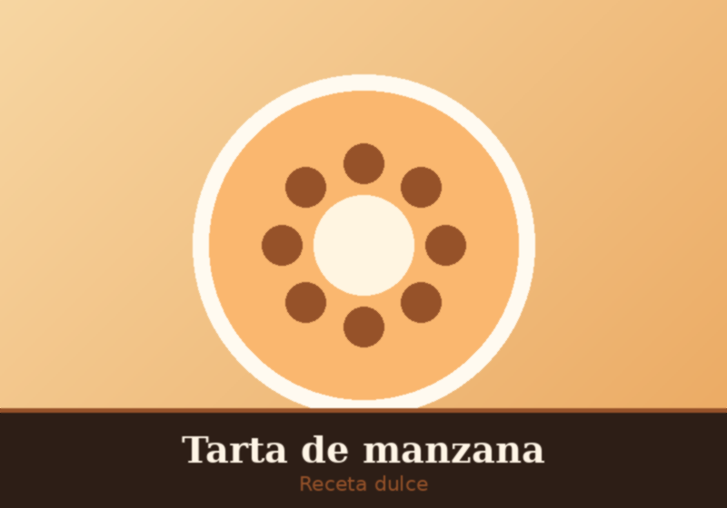
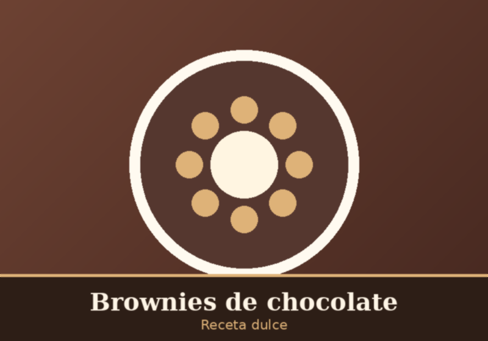
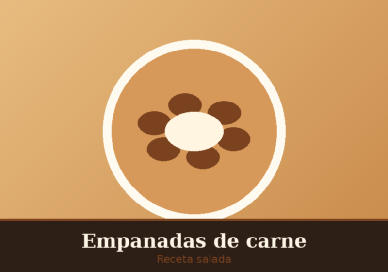
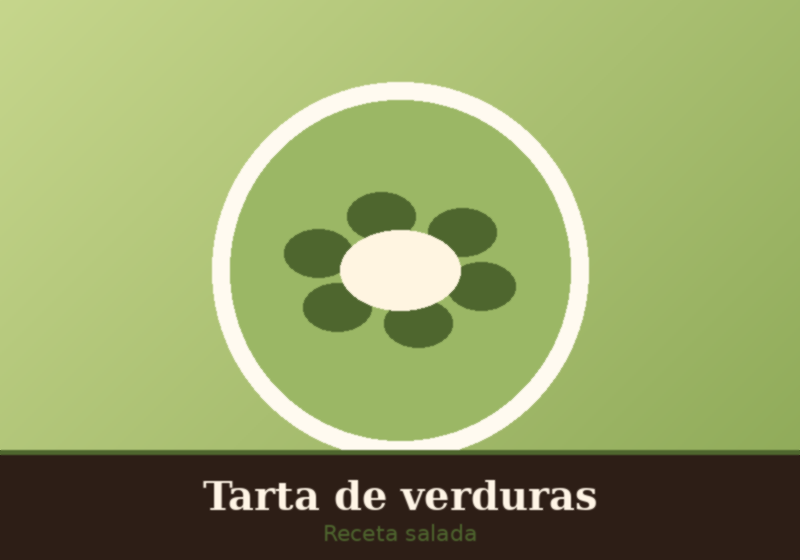
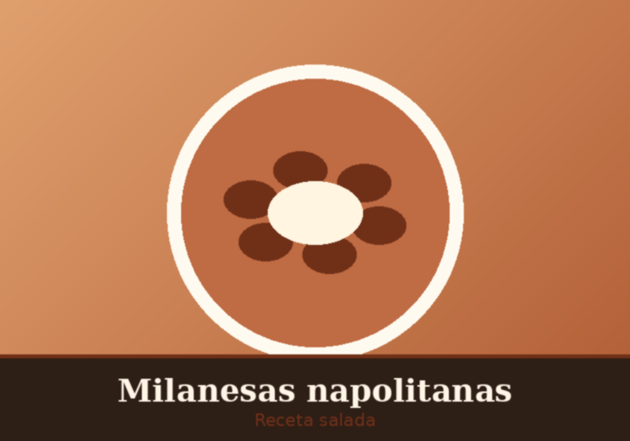

Dulce
Tarta de manzana
Masa crocante, manzanas caramelizadas y un toque de canela.
⬇ Descargar receta en PDFRecetas dulces y saladas para disfrutar en casa
Filtrá las recetas por tipo. La selección se hace sin necesidad de JavaScript, usando únicamente HTML y CSS.

Masa crocante, manzanas caramelizadas y un toque de canela.
⬇ Descargar receta en PDF
Húmedos y bien chocolatosos, con nueces opcionales.
⬇ Descargar receta en PDF

Relleno jugoso con huevo y aceituna, al horno o fritas.
⬇ Descargar receta en PDF
Acelga, cebolla y queso entre dos discos de masa dorada.
⬇ Descargar receta en PDF
Con salsa, jamón y mozzarella gratinada al horno.
⬇ Descargar receta en PDF